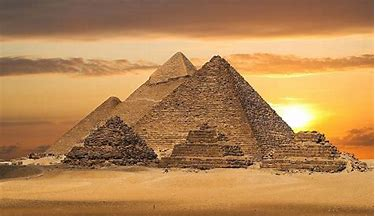
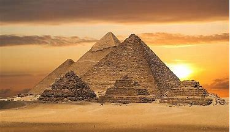

The Great Pyramid Of Giza by Chayse

 

The Pyramids of Giza consist of the Great Pyramid of Giza (also known as the Pyramid of Cheops or Khufu and construh-west. The Great Sphinx lies on the east side of the complex. Current consensus among Egyptologists is that the head of the Great Sphinx is that of Khafre.
Along with these major monuments are a number of smaller satellite edifices, known as "queens" pyramids, causeways and valley pyramids.Khufu’s pyramid complex consists of a valley temple, now buried beneath the village of Nazlet el-Samman; basalt paving and nummulitic limestone walls have been found but the site has not been excavated. The valley temple was connected to a causeway which was largely destroyed when the village was constructed. The causeway led to the Mortuary Temple of Khufu. From this temple the basalt pavement is the only thing that remains.
The mortuary temple was connected to the king’s pyramid. The king’s pyramid has three smaller queen’s pyramids associated with it and five boat pits. The boat pits contained a ship, and the 2 pits on the south side of the pyramid still contained intact ships. One of these ships has been restored and is on display. Khufu's pyramid still has a limited collection of casing stones at its base. These casing stones were made of fine white limestone quarried from the nearby range. His pyramid, which today stands 455 feet (138 meters) tall, is known as the "Great Pyramid" and was considered to be a wonder of the world by ancient writers.
Based on a mark in an interior chamber naming the work gang and a reference to the Fourth Dynasty Egyptian pharaoh Khufu, Egyptologists believe that the pyramid was built as a tomb over a 10- to 20-year period concluding around 2560 BC. Initially standing at 146.5 metres (481 feet), the Great Pyramid was the tallest man-made structure in the world for more than 3,800 years until Lincoln Cathedral was finished in 1311 AD. It is estimated that the pyramid weighs approximately 6 million tonnes, and consists of 2.3 million blocks of limestone and granite, some weighing as much as 80 tonnes.
Originally, the Great Pyramid was covered by limestone casing stones that formed a smooth outer surface; what is seen today is the underlying core structure. Some of the casing stones that once covered the structure can still be seen around the base. There have been varying scientific and alternative theories about the Great Pyramid's construction techniques. Most accepted construction hypotheses are based on the idea that it was built by moving huge stones from a quarry and dragging and lifting them into place.


There are three known chambers inside the Great Pyramid. The lowest chamber is cut into the bedrock upon which the pyramid was built and was unfinished. The so-called[2] Queen's Chamber and King's Chamber are higher up within the pyramid structure. The main part of the Giza complex is a set of buildings that included two mortuary temples in honour of Khufu (one close to the pyramid and one near the Nile), three smaller pyramids for Khufu's wives, an even smaller "satellite" pyramid, a raised causeway connecting the two temples, and small mastaba tombs for nobles surrounding the pyramid.